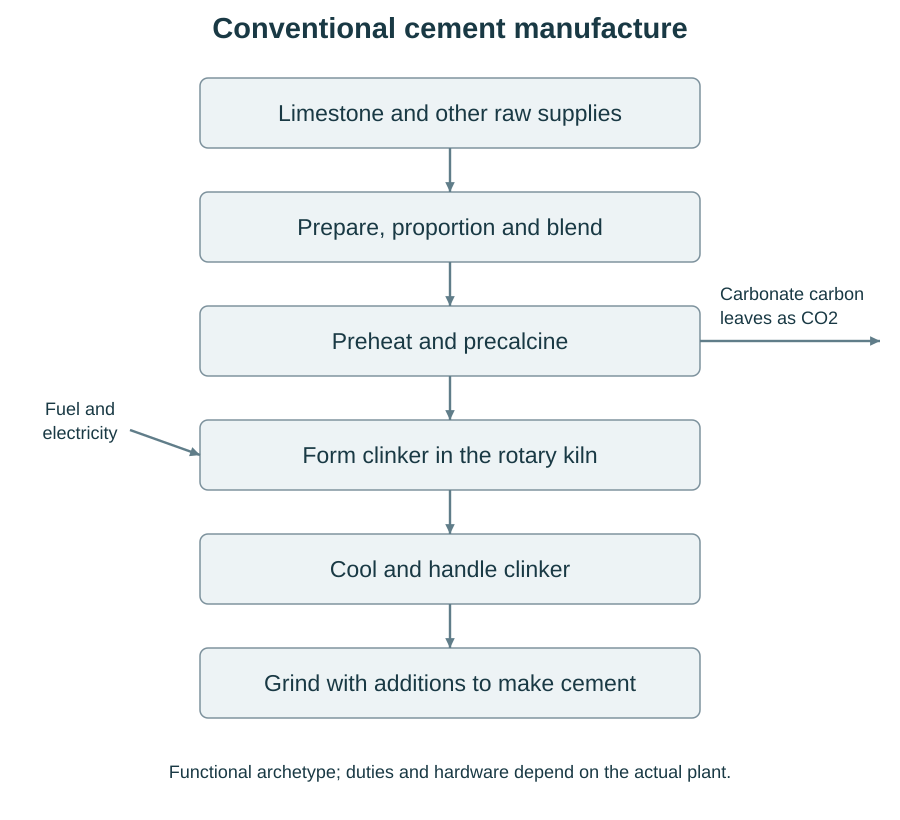

Basalt-Derived Calcium for Cement: A Weak Commercial Prospect Without Incentives or Technical Advances
Reported carbon outcomes, operating burdens and commercial prospects
Brad Pierce
24 October 2026
https://doi.org/10.5281/zenodo.23623124
Abstract
This assessment examines my Basalt-Derived Calcium for Lower Carbon Portland Cement: A Carbon Budget for Process Development and its calculation supplement. Under the studied process assumptions, with no substantial financial reward for avoided emissions and no major technical advance, I judge the acid-assisted basalt-recovery route a weak prospect for widespread commercial use. The reports give a 16.0% emissions reduction under favorable coupled recovery assumptions, full replacement of a selected calcium quantity and matched low-carbon electricity. Other reported assumptions erode or reverse the saving. The route adds substantial calcium-recovery work while retaining clinker and cement manufacture, creating a large processing burden for a fragile carbon advantage. This is a qualitative engineering judgment, not a demonstrated cost disadvantage; neither a complete priced case nor the realism of the assumptions for an actual project is established. Reliable emissions incentives could change private returns. Technical advances in usable calcium recovery, reagent regeneration, conditioning or precursor requirements could reduce the underlying burdens. Either or both could improve the commercial outlook, but the achievable gains and support required remain unknown.
Keywords: basalt-derived calcium, Portland cement, cement decarbonization, calcium recovery, reagent regeneration, carbon accounting, commercial feasibility, process development
© 2026 Brad Pierce · CC BY-NC 4.0
0. A weak prospect under the studied technical and financial assumptions
I judge the studied acid-assisted basalt-recovery route a weak prospect for widespread commercial use, assuming the reported recovery design and performance targets, no major technical advance and no substantial financial reward for avoided emissions. Avoiding limestone’s carbonate emissions is a sound chemical objective, but the route adds substantial calcium-recovery work while clinker and cement manufacture continue. Its reported saving depends on favorable recovery performance and can disappear under adverse assumptions. My expectation is that the added burden will be difficult to justify for a fragile gain. This is a qualitative judgment about the studied route under stated conditions, not every silicate-calcium technology.
The numerical basis is my Basalt-Derived Calcium for Lower Carbon Portland Cement: A Carbon Budget for Process Development and its calculation supplement [1,2]. They report 480 kg CO₂/t cement calcination emissions and select 95% (456 kg/t) as avoidable, assuming full replacement of the associated calcium. That selected accounting quantity is not an identified plant stream; the actual replaceable share is unknown. Favorable recovery assumptions and the same 30 g CO₂e/kWh electricity in both routes give reported footprints of 756.9 kg CO₂e/t conventional cement and 636.0 kg/t for the basalt route: a 16.0% reduction. Changed recovery, reagent and heat/water assumptions reduce or reverse the saving. Section 3 explains this conditional calculation, which does not show what a plant achieves.
The recovery duty is substantial even in the favorable calculation: 2,581.9 kWh of electricity and 1.74 GJ of added heat per tonne cement. Rock preparation, chemical release, separation, reagent regeneration, washing, drying and residual handling require an upstream operating system. That system must deliver usable rock-derived calcium while the receiving plant sustains acceptable cement output. The reports do not establish those functions working together or their complete actual emissions inventory. Sections 1 and 2 explain the requirements; Section 3 shows how recovery burdens consume the avoided emissions.
The economic concern follows from the added equipment, utilities, consumables, maintenance, stocks, residual outlets and continuity arrangements. Costs, sustained acceptable output, operating life and financing remain unestablished, so no cost disadvantage is demonstrated. The commercial reference case assumes no substantial carbon-price or credit income, low-carbon procurement premium or production support for avoided emissions. We have not established that these assumptions match an actual project’s circumstances. Reliable rewards could make a costly route attractive to investors; the payment required is unknown. Cheap low-carbon power, usable heat and accepting outlets could also help a particular location. Sections 4 and 5 examine these conditions.
This conclusion does not establish that society should reject the idea or that policy-supported deployment would be uneconomic. Technical progress could also change the calculation: less reagent demand, durable regeneration, lower washing and drying duties, or a simpler acceptable precursor. Sections 6 and 7 explain these possibilities and the evidence that would change my view.
1. Changing the calcium source within cement manufacture
The manufacturing change examined here is to obtain calcium for clinker from basalt instead of limestone. Clinker is the material formed by heating a proportioned mineral raw mix and then cooling it; it is subsequently ground with the required additions to make cement. In conventional manufacture, limestone supplies calcium mainly as calcium carbonate. Its decomposition, CaCO₃ → CaO + CO₂, releases carbon dioxide from the raw material, separately from emissions associated with fuel and electricity. Calcium already bound in silicate minerals offers a possible way to avoid part of that carbonate release. It must first reach a usable manufacturing input, however, and the recovery operations can introduce substantial new duties. The chemical premise therefore establishes a possible source of avoided emissions, rather than a demonstrated reduction for finished cement.
1.1 Why changing the calcium source could reduce emissions
Basalt is a mixture of minerals, not a ready supply of free lime. Its calcium can be bound in silicate phases, and the amount and accessibility of that calcium depend on the actual mineralogy, alteration and preparation of the feed. Reporting its calcium as CaO-equivalent expresses calcium content on a common mass basis. It does not mean that the rock contains free CaO, or that recovery will deliver CaO as the physical product. A recovered material could contain calcium in another phase and could also contain water, salts or other mineral constituents. Its actual composition and phase determine what further processing and firing are required. Carbonate impurities in the feed, carbonate introduced during recovery, and any remaining conventional carbonate inputs must also be accounted for; the use of a silicate-bearing feed does not make all subsequent carbonate emissions disappear.
The emissions comparison concerns the carbonate duty actually replaced in producing equivalent qualified cement. That means cement at the factory gate with matched clinker fraction, composition class and required performance, rather than equal masses of rock, recovered cake or clinker. The eligible calcium requirement is the defined part of that manufacturing requirement to which the substitution applies. A replacement fraction refers to that eligible calcium duty on the common CaO-equivalent basis. It is neither the fraction of basalt powder blended into cement nor necessarily the fraction of every calcium or carbonate input removed. In the reference screen, eligibility is a selected share of the reported calcination inventory, not an assay identifying an actual plant-specific calcium stream that can be removed. Its numerical boundary is stated with the carbon comparison in Section 3. The present reference illustration assumes full replacement of that selected eligible requirement; a smaller introduction would require its own linked supply, manufacturing and continuity conditions.
Avoiding carbonate release is only one side of the comparison. The other side includes the actual differences caused by preparing the rock, releasing and separating calcium, regenerating and replacing reagents, isolating and conditioning material, supplying utilities, transporting streams and managing residues. A reagent is a chemical used to cause or control a process reaction, such as acid used to release mineral constituents or base used during separation. Its production and replacement carry obligations even if much of it is circulated internally. Corrective raw materials, additional host processing, maintenance and replacement requirements also remain in the comparison where they differ between routes. The reference accounting retains common kiln-energy demand and assigns the same energy-supply assumptions to both routes; it adds recovery heat and gives no main credit for an unverified clinkering advantage or displaced limestone preparation. It also assigns no coproduct-displacement, carbon-removal or burden-allocation credit. These conventions keep a favorable reaction endpoint from standing in for a complete manufacturing inventory.
1.2 What manufacture still has to accomplish
Figure 1a places the proposed substitution within a conventional dry-process manufacturing sequence. Raw materials still have to be received, prepared and proportioned to make a suitable combined raw mix. Thermal processing must still prepare that mix for clinker formation, including drying, dehydration and any remaining decarbonation. The reference manufacturing archetype uses preheating and precalcination before the rotary kiln, followed by clinker cooling. Cement finishing, additions, handling and dispatch then produce the intended cement. These are retained functions. Whether an alternative calcium-bearing input changes the equipment or duty needed for any one of them depends on the input and its connection to the host process.
A noncarbonate calcium source could change where reactions occur and how heat, gases, dust and recycled material move through that sequence. A wet precursor may require additional drying; a hydrated phase can introduce bound water; salts or excess mineral constituents can alter the combined raw mix and internal circulation. Raw preparation, controlled blending and corrective additions must accommodate these effects. Retaining a function therefore does not establish unchanged hardware, heat demand, gas capacity, throughput or operating stability. Conversely, displacement of limestone does not establish that the preheater, precalciner or kiln train can be removed. The actual precursor, host and entry point have not been selected, so these engineering interfaces remain unresolved.
Qualification follows the material through several distinct decisions. A supplier must first show that material meets dispatch requirements. Receiving and any intermediate handling have their own requirements. The combined raw mix must be suitable for the host, thermal operation must yield acceptable clinker, and the resulting cement must meet its conformity and intended application requirements. A calcium-rich intermediate does not pass these later stages merely by containing enough calcium. Other recovered constituents, including silicon, aluminium or iron, may make useful contributions within a particular raw mix; excess amounts or accompanying impurities may instead require separation or correction. The acceptance question is consequently specific to a host, product, replacement fraction and delivered phase and form, rather than a universal demand for a chemically pure calcium product.

1.3 One proposed recovery route and the functions of its returns
The acid-assisted route in Figure 1b is an illustrative architecture for obtaining a usable calcium-containing contribution from prepared basalt. Acid contacts the prepared rock and releases calcium and other soluble constituents into liquid. The remaining undissolved solids must be separated. The resulting calcium-bearing liquid then requires whatever impurity separation and calcium isolation are necessary to produce an acceptable material. Isolation means recovering a material from the process stream; it is followed by washing and conditioning to control entrained liquor, moisture, salts and handling properties. A precursor is this prospective manufacturing input before the host has converted it into clinker and qualified cement. The sequence identifies necessary functions without selecting the actual acid, base, counterion, separation chemistry or equipment.
Neither dissolved calcium nor an isolated calcium-rich solid, by itself, establishes recovery of usable rock calcium. Calcium can enter with reagents, neutralizers or slurry salts as well as with basalt. These origins must be tracked separately through the acceptable precursor, undissolved solids, impurity precipitates, wash streams, purges and rejects. An architectural example discussed in the technical report introduces calcium chloride and hydrated lime; its solution calcium concentrations therefore cannot establish basalt-derived recovery. The required measure is the attributed rock calcium that survives dissolution, separation and isolation into acceptable material. Loss or rejection at any stage reduces that usable quantity, even if dissolution itself was high.
Acid and base capacities describe the chemical ability of a solution to supply or accept proton equivalents in the required reactions. Circulating a liquid can reuse capacity that remains available. It does not, by itself, restore capacity consumed in dissolving rock, separating constituents or neutralizing streams. Recovering unused free acid, recovering salts, directly reusing suitable liquor and generating acid and base are different functions. Regeneration restores usable reagent capacity from an appropriate returning stream and requires its own feed quality, energy and equipment. The illustrative circuit therefore includes separation, suitable returns, regeneration, fresh makeup and purge, rather than a return arrow that implies complete chemical closure. Initial reagent inventory and recurring replacement are also separate requirements.
The material that does not reach the host still has to go somewhere. Preparation rejects, undissolved rock, impurity solids, spent or off-spec liquids, wash and purge streams, rejected precursor and contaminated stocks need characterized outlets. Washing, dewatering, treatment, storage, transport and an accepting destination may all be necessary. Electrical demand includes preparation, regeneration and auxiliaries; recovery heat can include solution heating and drying. Water can move around the circuit many times before some is lost, discharged or replaced. Showing these movements does not establish their quantities, safe disposition or receiving capacity. The accounting convention of no coproduct credits leaves these physical obligations in place.
Alternative recovery routes should be compared by how they perform these functions. They may differ in how calcium is released, whether useful constituents are retained together or separated, how a transferable material is isolated, and whether reagent capacity is reused, recovered or regenerated. Those choices change residual streams, conditioning, utilities and the interface with manufacture. A route-family name, a successful reaction, a clean-brine stack result or a modeled cake does not establish the entire chain. Each route needs evidence for its own feed, returning liquor, delivered material and sustained output; the acid-assisted illustration is one way to make those requirements explicit.
![Proposed basalt recovery connects to retained cement manufacture through a still-unselected raw preparation or controlled-blending entry. Dissolution produces undissolved rock; separation, isolation and conditioning must yield acceptable calcium material. Other solids, liquids and purge need outlets. A dashed return indicates conditional restoration of suitable acid capacity by reuse or regeneration, not a demonstrated closed loop. Dispatch and receiving checks, makeup, wash water, power and heat remain necessary. Chemistry, base routing, host acceptance and qualified operation remain unresolved.](figures/F1b.svg)
2. Making recovery and cement manufacture work together
A workable route requires more than a collection of favorable unit results. The same feed must yield enough attributed rock calcium in acceptable material at the required rate. The associated liquors must support separation and regeneration, and washing, heat recovery, dewatering and drying must be compatible with that rate and material quality. The host must receive the material when required and make qualified cement with the necessary utilities, residual outlets and continuity arrangements. These conditions interact: improving one stage can change the load and performance of the others. The favorable calculation assumes that they can coexist; it does not demonstrate that they do.
2.1 Recovery must mean acceptable rock calcium at a useful rate
The starting basis is characterized prepared dry feed. Its grade is the CaO-equivalent calcium content divided by the mass of that prepared dry feed, rather than the grade of wet delivered rock or an unprepared deposit. Any enrichment must account for its yield, losses and rejects. Dissolution, separation and isolation then determine how much of the original rock calcium reaches acceptable precursor. Overall usable recovery includes all of those stages. The selected overall recovery in the reference calculation is an assumption about that complete path; it is not established by a leach test, a solution concentration or a cake assay. Any externally supplied calcium must remain separately attributed and its production charged.
Three quantities must be kept apart: the usable attributed calcium yield, the amount required by the matched cement, and the rate at which accepted material is supplied. A concentrated solution can contain little total calcium or reflect imported calcium. A high batch yield can require a residence time or separation rate incompatible with the intended output. A large total calcium yield can include material that the host rejects. Other potentially useful constituents affect this assessment through the combined raw mix: retaining them could reduce some separation or corrective needs, while unwanted co-release could increase reagent demand and purification. Their usefulness must be shown for the actual host and product.
Handling bases matter alongside calcium balances. Prepared dry rock, dry isolated solids and wet cake are different masses. The modeled cake in the calculation is a Ca(OH)₂-equivalent abstraction, not an established hydroxide product. Its selected solids fraction describes modeled dry solids divided by modeled wet cake mass; it is not usable calcium recovery. Actual phases, free and bound water, entrained liquor and delivered variability remain unresolved. Until these are known consistently across streams, total as-handled flows and the water balance remain gaps. No wet-flow requirement can be inferred here from dry-feed grade or a selected cake-solids fraction alone.
2.2 Regeneration, washing and conditioning must work together
The calculation represents reagent demand with λ, a dimensionless multiplier relative to two proton equivalents per recovered calcium. Co-release of other constituents, excess demand and losses can raise that multiplier. It must ultimately describe the complete circuit for the same feed and usable recovery, rather than a favorable reaction in isolation. The principal report selection is λ = 1.30; it is chemistry-informed but not measured integrated basalt performance. The report also identifies a specific incompatibility between its lower reference multiplier and one stated plagioclase composition with full sodium co-release. That conflict does not validate the principal multiplier or rule out every feed and route.
Specific electricity consumption, SEC, is the electrical energy charged per unit of generated reagent equivalent on the stated basis. Here the report uses kilowatt-hours per kilogram of generated NaOH-equivalent: a common measure of base capacity, not a declaration that the complete process uses a selected physical HCl/NaOH loop. The calculation distinguishes required acid equivalents A from generated base equivalents N through N = A/y, where y is the selected acid/base yield basis, 0.90. It charges the full paired stack once per generated NaOH-equivalent. Acid-normalized and base-normalized descriptions of the same paired stack are alternative normalizations, so adding both would count the same stack twice. The selected stack SEC of 1.8 kWh/kg generated NaOH-equivalent is a report-accounting input. The technical report cites clean-brine pilot results, but the original empirical SEC denominator and table have not been independently inspected for this case. Neither that selection nor the clean-brine evidence establishes the electricity, purification or lifetime of a representative basalt-liquor circuit.
Fresh makeup is an additional charge with an explicit denominator. The report applies mNaOH × ℓ × Fpair, where mNaOH is the nominal generated NaOH-equivalent mass on N = A/y, ℓ is the selected loss fraction of 0.02 on that nominal mass basis, and Fpair is the paired makeup factor of 3 kg CO₂e per kg NaOH-equivalent, including both reagents. This fixes the accounting basis of the selected makeup percentage. It does not measure physical losses or establish the quantities of actual chemicals to purchase. The convention increases nominal generation through the yield allowance, adds paired makeup without reducing nominal stack duty, and gives no credit for surplus base. It remains an accounting convention with an unresolved chloride and impurity balance, rather than a completed chemical circuit.
Washing and regeneration cannot be optimized independently of usable recovery and host acceptance. Additional washing may remove entrained salts or impurities, but it can also lose calcium, dilute returning streams, increase water treatment and drying loads, and slow filtration or handling. Reusing more liquid may reduce some fresh inputs while concentrating impurities that require separation or purge. Purging can increase both replacement demand and residual treatment. More demanding purification may change auxiliary electricity, membrane service and maintenance. Selected regeneration, washing and cake conditions can therefore coexist as calculation assumptions while their simultaneous physical performance remains unestablished. A proposed remedy must revise the connected calcium, reagent, salt, water, heat, electricity and rate requirements together.
Circulation is the internal movement of liquid; freshwater withdrawal is water brought in from an external source. They are not interchangeable quantities. External withdrawal, consumption, treatment and return depend on losses, purge, moisture leaving with material and the quality needed at each use. Similarly, sensible-heat recovery is recovery of heat associated with a temperature change. A selected sensible-heat recovery fraction does not describe recovery of all process energy, and a temperature rise does not specify absolute process temperatures. Flow rates, heat-exchanger approach temperatures, fouling, wash conditions and filtration must support the selected heat and moisture conditions together.
The modeled supplied recovery-heat duty is the heat required after the calculation's process-efficiency allowances. An actual heat carrier, delivery boundary and upstream conversion still have to be assigned to it. This service is separate from retained kiln fuel input; equal emissions factors do not make the services physically interchangeable. Bound water and actual precursor firing must also be reconciled with host operation. Electricity and heat have to be available at the required quality, timing and load, with connections, interruptions and any backup arrangements included. A per-tonne energy quantity does not establish power capacity, annual service availability, price or usable spare heat.
The needed evidence consequently concerns a joint run with a stated feed, throughput and duration. It must trace calcium origins and close material, reagent or salt, and water balances across internal and external streams within stated analytical tolerances. It must measure the full regeneration stack and required auxiliaries together with preparation, pumping, washing, treatment, heat exchange, dewatering and drying. Component life, membrane replacement, corrosion, purge, outages and residual disposition belong to the same operating account. The intended host output must then be produced and qualified with actual corrections and firing duties. Separate demonstrations remain useful evidence for their own conditions, but they cannot be assembled into evidence that the combined chain has already operated.
2.3 A bounded host introduction still depends on a complete supplier chain
The recovered material must meet the requirements of a particular host, cement product, eligible-calcium replacement fraction, phase and form. These include useful and excess constituents, salts and trace components, free and bound moisture, entrained liquor and variability, as well as storage, containment, transport, reclaim and metering. Dispatch quality and receiving quality must each be assessed, with quarantine, reconditioning, return or disposal for material that fails. A standardized precursor or compatibility with existing limestone handling cannot be assumed. The physical alternatives in Figure 1b—entry through raw preparation or controlled blending—depend on those material and host requirements.
Material quality has to be established at three stages. The supplier must produce material suitable for dispatch. The host must receive and process it into acceptable clinker and cement. The resulting cement must meet its intended performance and application requirements. Supplier conformity alone establishes neither successful manufacture nor a market for the final product.
A host may consider a bounded contribution while a supplier carries substantial preparation, recovery, regeneration and outlet duties. Those supplier duties do not, by themselves, reject every bounded host introduction. They do require their own capacity, control, maintenance, staffing, utilities and receiving endpoints. A partial replacement also retains the host's remaining conventional inputs and may retain conventional handling and fallback capability. Equipment, service and contractual commitments need not shrink in proportion to the accepted calcium fraction. Even full replacement of the defined eligible requirement does not establish removal of every conventional input, carbonate source or manufacturing asset.
Continuity must connect supplier dispatch, the host's accepted contribution and qualified cement output over the same periods. Nameplate capacity does not establish that profile. Ramp-up, rejected material, shared-service interruption, maintenance, buffer degradation, restart and requalification can each change accepted output and required inventories. Construction, component and system lives also affect replacements and remaining commitments. The present per-tonne reference supplies no actual plant scale, utilization, dispatch profile or operating duration. Any buffer, backup or retained capability proposed to meet continuity needs brings its own physical and operating duties.
Stopping deliveries is only one part of an exit or restoration path. The supplier may still need to shut down safely, clean equipment, manage reagent and liquor inventories, dispose of or transfer product and rejects, and satisfy remaining outlet or service commitments. The host may need conventional feed and services restored, a changeover, corrective inputs, restart and requalification. System and site closeout remain separate again. A new integrated plant has no previous manufacturing line to restore. Physical reversion, release of contracts and recovery of asset value are distinct questions; the ability to stop a delivery establishes none of them by itself. Duties should be assigned once across supplier, transfer, host, utility and outlet functions, regardless of eventual ownership.
Recovery performance, host operation and continuity are distinct but connected requirements. Usable rock calcium must reach the host, the host must accommodate its thermal and chemical effects, and acceptable cement output must be sustained. Partial replacement can retain conventional inputs and fallback equipment alongside the added recovery system. These operating duties remain even when an individual recovery step performs well.
A favorable carbon balance is therefore only one part of a workable route. Cost depends on the complete added and retained system and its sustained qualified output. Local feasibility depends on the joint availability of feed, utilities, outlets and host capacity. The following sections assess these practical limits alongside the reported carbon result.
3. Complete-process carbon benefit
Replacing carbonate-derived calcium can avoid part of calcination release, but the benefit depends on the other burdens required to deliver equivalent qualified cement. The results below come from the earlier carbon-budget paper and its calculation supplement. They are conditional calculation results, with joint operation and site-specific emissions unverified.
3.1 A matched product and a complete difference
The comparison is expressed as Ebas = B − fD + ΔK, in kg CO₂e per tonne equivalent qualified factory-gate cement. B is the conventional comparator footprint on that same product and inventory basis; D is the selected eligible carbonate release avoided at full replacement; f is the dimensionless fraction of that eligible calcium requirement replaced; and ΔK = Kbas − Kconv contains every other supported route difference, with its sign. Full replacement of eligible calcium is not replacement of all cement, all carbonate or a basalt powder blending fraction.
The source selects clinker fraction 0.914, calcination anchor C=480 kg CO₂/t cement and eligible fraction e=0.95; its reported avoided duty is D=456 kg CO₂/t. Its calcium accounting quantity is inferred from that anchor, not a measured feed or product assay. The paired conventional archetype retains shared kiln input of 3.5 GJ/t clinker, common electricity of 100 kWh/t cement and common-other burden U=50 kg CO₂e/t. The actual product, conversion from precursor, host and qualification remain unresolved.
The source principal screen selects ΔK = P because common kiln heat, common electricity quantities and U are matched, and P contains the modeled added recovery terms. This equality is a screen convention, not a general physical identity or a demonstration that its subtotal contains every actual difference. Common terms cancel from the absolute saving but remain in B when calculating a percentage reduction. The same electricity factor applies to both routes; recovery electricity is additional.
Each differential duty belongs once in the comparison: preparation and enrichment, reagent generation and recurring makeup, purification, washing and purge, calcium isolation and conditioning, residual handling and outlets, transport, host correction and firing changes, infrastructure and replacement, and resources needed for reliable qualified supply. The full paired stack is charged once per nominal generated NaOH-equivalent; acid and base SEC normalizations from that stack are not additive. The source charges makeup in addition to nominal generation without reducing stack duty or crediting surplus base. An other-recovery reserve does not close a salt balance or establish that all omitted functions fit within it. Actual noncancelling δU remains unknown, rather than zero.
Principal coproduct displacement, carbon removal and allocation credits are zero. No unverified kiln-energy or displaced limestone-preparation saving is credited. An inventory comparison using a selected lifecycle electricity factor answers a different question from a consequential intervention that specifies incremental demand, marginal supply and displaced alternative uses; no such consequential result is supplied here.
![Conditional carbon balance per tonne equivalent cement: reported avoided carbonate CO2 release of 456 kilograms is offset by 335.1 kilograms CO2-equivalent of added burdens, leaving a reported net reduction of 120.9 kilograms CO2-equivalent. Added burdens are recovery electricity, heat, paired reagent makeup, other recovery, remaining feed carbonates and a fixed increment. Labels and their values are printed in the figure and caption. The selected recovery and matched electricity assumptions must hold together; this is a calculation, not measured plant performance, and the source rounding is not reconciled here.](figures/F2a.svg)
For the full-replacement selective target at 30 g CO₂e/kWh, the technical paper reports 2,581.9 kWh recovery electricity and 1.74 GJ added recovery heat per tonne cement. It reports 335.1 kg CO₂e/t added burden and 120.9 kg CO₂e/t net reduction, with paired conventional and basalt-route footprints of 756.9 and 636.0 kg/t and a 16.0% reduction. Figure 2a retains all six printed component labels and the reported total and net; their source rounding has not been independently reconciled. The reported result assumes the low-duty, high-recovery, heat-recovery and cake-solids premises together; their joint physical performance remains unestablished.
3.2 Coupled assumptions change the reported outcome
The favorable result belongs to its complete package. Table 1 follows the source design comparison at full selected eligible-calcium replacement and matched supply, linking the named assumptions to the burdens and paired outcomes they accompany. Moderate integration and the recovery/selectivity penalty retain only single-digit reported reductions at 30 g/kWh. Combined penalties and hot dilute increase reported emissions. These selected scenarios show sensitivity to coupled assumptions; they are not probabilities, and their favorable inputs cannot be combined independently.
Table 1. Reported package → assumptions → burdens → paired carbon outcome at 30 g CO₂e/kWh.
| Package | Selected coupled conditions | Why the burdens change | Paired kg CO₂e/t; reduction |
|---|---|---|---|
| Selective target | Grade 0.12; usable recovery 0.90; λ 1.30; SEC 1.8; 35 K rise; sensible recovery 0.85; cake solids 0.80. | Avoided eligible carbonate release must cover the reported electricity, recovery heat, paired makeup, other recovery, feed-carbonate and fixed burdens. Low stack duty, sensible-heat recovery and cake solids are coupled premises. | 756.9 → 636.0; 16.0% |
| Moderate integration | Grade0.10; recovery 0.85; λ 1.25; SEC 2.1; cake solids 0.75; grinding 60 kWh/t rock; reserve 10 kg/t rock. | Lower grade/recovery, higher stack SEC and grinding, and wetter cake change material, electricity and drying requirements together. Its lower λ is not an independently selectable benefit attached to the selective result. | 756.9 → 690.0; 8.8% |
| Recovery/selectivity penalty | Recovery0.85; λ 1.50; grinding 60 kWh/t rock; reserve 10 kg/t rock; source principal package otherwise as described. | Reduced usable recovery and increased reagent demand require coupled material and reagent duties; higher grinding and other recovery allowances add burdens. No new component decomposition is assigned. | 756.9 → 689.8; 8.9% |
| Combined process penalties | Recovery/selectivity penalty together with sensible recovery 0.75, cake solids 0.75 and100 additional kWh/t. | Reagent/material penalties coexist with poorer sensible-heat recovery, wetter cake and added power; the paired outcome is adverse. It cannot be reconstructed by adding reported percentages. | 756.9 → 767.2; −1.4% |
| Hot dilute | Grade0.10; recovery 0.85; λ 1.30; SEC 2.6;70 K rise; sensible recovery 0.70; cake solids 0.65; makeup 0.03. | Higher stack SEC and grinding combine with a greater temperature rise, poorer heat recovery, wetter cake and higher makeup/reserve selections. These coupled conditions accompany a substantial reported emissions increase. | 756.9 → 1,063.8; −40.5% |
All five rows report full replacement of selected eligible calcium (f=1), one tonne equivalent factory-gate cement at clinker fraction 0.914, and the same 30 g CO₂e/kWh electricity factor for both routes. The reported conventional comparator is 756.9 kg CO₂e/t. These are source calculation packages, not observed circuits or transferable results for a particular host.
Table 1 uses the source’s common matched product, supply and accounting conventions. Reported definitions come from the calculation supplement’s Tables S1/S2 and common-input/stress descriptions; paired outcomes come from the technical paper’s Table 2. Detailed assumptions and the limits of numerical verification are collected in Appendix B.
A positive reduction means the reported basalt-route footprint is lower than its paired conventional footprint; a negative reduction means an increase. No probability, attainable operating envelope or independent selection of favorable inputs is implied. All columns have the common product basis above.
![Horizontal bars compare five reported coupled process packages at the same selected replacement and matched electricity. Reductions are 16.0 percent for the selective target, 8.8 for moderate integration, and 8.9 for the recovery/selectivity penalty. Combined process penalties increase emissions by 1.4 percent and the hot-dilute package increases them by 40.5 percent. Reductions extend right of zero and increases left; values and directions are also written, so color is not needed. Table 1 defines the conditions. These are selected calculations, not probabilities or proven operating conditions.](figures/F2b.svg)
3.3 Electricity, remaining margin and the incumbent
Appendix B, Table 3 retains the principal named electricity points. Recovery power is large relative to the shared power selection, so changing the common supply factor changes both paired footprints and their difference. The conventional denominator changes too. These points do not define an interpolated performance surface. A lifecycle intensity factor also does not establish that power with the required capacity, continuity and delivery resources is available.
The same electricity change leaves less margin in adverse packages. Appendix B, Table 4 keeps the recovery/selectivity, heat/water and combined stresses visible alongside the principal case. The heat/water stress selects sensible recovery 0.75, cake solids 0.75 and 100 additional kWh/t; the combined package applies that stress together with the recovery/selectivity changes in Table 1. No component contribution or percentage difference is newly calculated.
The technical paper reports a paired 10% electricity ceiling of 47.4 g CO₂e/kWh and a 20% ceiling of 18.3 g/kWh for the selective target. The source solves a denominator that changes with common electricity rather than holding B fixed. These thresholds are source calculations under the selected package, not new calculations here or guarantees of delivered supply.
At 30 g/kWh the calculation supplement reports 45.2 kg CO₂e/t headroom for a 10% reduction target. This is one joint allowance for all further noncancelling differences while preserving that target, not money and not a separate allowance for every operation. Unmeasured conditioning, correction, transport, infrastructure, replacement and reliability burdens must share it; missing burdens are not zero. It supplies no measured evidence that those requirements fit.
The percentage saving also depends on the conventional comparator. An improved conventional process must be compared with the basalt route on consistent cement, energy and inventory assumptions. Changing the cement product or carbonate basis can change avoided emissions, calcium demand and recovery duties together. Lowering an aggregate conventional footprint alone does not supply that consistent comparison.
A separate fixed-inventory illustration in the supplement uses a λ1.10 case and a different conventional inventory. It reports 764.5 kg CO₂e/t for the basalt route from a 919 kg/t reference; holding that estimate fixed against 750 kg/t conventional cement gives a reported 1.9% increase. The cited declaration distinguishes 822 kg/t A1–A3 from a net 750 kg/t after a waste-fuel allocation deduction, so product and accounting boundaries require reconciliation. The illustration shows the importance of the comparator, but does not establish a matched comparison with an improved conventional plant.
Read as process-development evidence, the reported carbon results make the advantage look fragile. The 16.0% reduction already depends on a favorable coupled recovery package, and specified penalties can leave little saving or reverse it. I do not regard that as a strong carbon case for broad commercial deployment of the studied route. This is an interpretation of the reported scenarios, not a probability estimate or proof that all possible designs fail. Numerical reproduction, actual joint operation and product qualification remain unverified.
4. Economics and operational sense
Without substantial financial rewards for avoided emissions, the added recovery system makes the economic case look difficult. It brings capital and recurring operating duties upstream of a cement plant whose main manufacturing functions continue. Combined with the fragile reported carbon benefit, that burden makes me skeptical that this route will become broadly commercially attractive under that assumption. This is a qualitative engineering assessment, not an estimated price, return or cost per tonne avoided. Product acceptance, accepted output, utilization, component and system lives, installed scope and monetary terms remain unknown. Those missing terms leave the degree of economic difficulty unresolved, and a priced operating case could overturn my expectation.
4.1. Added work and genuinely avoidable work
Recovery adds a chain of preparation, dissolution, impurity separation, precursor isolation and washing, reagent regeneration, makeup and purge management. Delivery adds conditioning, containment, transport and receiving. The host still has to prepare and proportion raw materials, manage corrections and remaining carbonate inputs, make clinker and qualified cement, and dispatch it. Utilities, residual outlets, controls, quality assurance, staff, maintenance and commissioning belong in the comparison wherever required. Existing equipment may change the incremental expenditure, but its existence alone establishes neither spare capacity nor an entitlement to use it. An expenditure is avoided only when the corresponding duty or commitment can actually be released while sustaining the required output.
The material bases matter economically as well as physically. Prepared dry feed is distinct from as-handled rock; modeled cake solids are distinct from usable recovered calcium and from delivered cake mass. Moisture, phase, entrained liquor and wash losses remain unresolved, so neither transport tonnage nor freshwater purchases can be inferred from the dry-feed or circulation conventions. Extra washing might improve acceptance while changing recovery, regeneration, heat, water, residuals and throughput. It cannot be priced as an isolated improvement that leaves the rest of the process unchanged. The operating table shows how these effects can change costs together.
Accepted delivery and sustained qualified output also determine the useful economic denominator. Nominal dispatch, installed capacity and a source calculation normalized per tonne do not establish accepted utilization. Outages, membrane life, maintenance, stock degradation, requalification and ramp-up can change both recurring resources and the output over which commitments are borne. A smaller calcium contribution does not make indivisible equipment, staffing, inventories or fallback capability fall proportionally. Full eligible replacement likewise does not establish removal of every conventional input or manufacturing asset. Supplier shutdown, stock and contract obligations must be separated from the host’s ability to restore conventional feed and from site closeout.
An engineering change must be evaluated in the same revised physical and economic comparison. Lower energy demand may reduce consumption, but its effect on cost also depends on delivered price, equipment, utilization and maintenance. Changes in material phase, services, host operation, life or qualified output can affect both carbon and cost.
4.2. Whose expenditure and which benefit?
Private return asks whether a specified party’s receipts cover its own payments and commitments on stated terms. Supplier receipts for accepted precursor and host purchase payments are opposite sides of an internal transaction; they do not both become additional real resource consumption. The supplier still bears its assigned production, stock and exit duties, while the host bears its receiving, manufacturing, retained and reversion duties. Consolidated resource accounting follows the underlying functions once. Public fiscal accounting separately follows support payments, receipts and administrative resources. A transfer can improve private cash flow without establishing a reduction in total resources or cheap public abatement.
The four accounts below answer different questions. Common cement revenue cancels unless a supported difference in price or qualified volume is established. Production-cost accounting must distinguish capital recovery from financing cash flows, so the same finance is not charged through both annualized capital and debt service. Currency, price year, horizon, tax, escalation, construction, working capital and liquidity terms are unknown. A verified cost per tonne avoided would also require a matched, positive physical abatement estimate; the conditional source reduction does not provide an achieved abatement denominator.
Separate outcome questions
| Outcome treatment | What the account measures | Present finding and limit |
|---|---|---|
| Private cash return | Supplier or host receipts, payments, financing, stocks, contracts and shutdown obligations. | Prices, accepted output and operating life are not established, so private profitability cannot be estimated. A participant’s saving alone does not establish a saving in total resources. |
| Public fiscal effects | Support and tax flows, public receipts and administrative or other public resource use. | The fiscal effect depends on who pays, who receives support and the terms. A transfer is separate from underlying resource use and is not counted again as a physical resource cost. |
| Real resource use | Preparation, recovery, delivery, host manufacture, utilities, residual management, retained equipment and restoration, counted once. | The relevant duties are identifiable, but their complete quantities, life, output and prices are unknown. Internal host purchases and supplier sales cancel in the consolidated account. |
| Physical abatement | The emissions difference for matched cement, operating periods and inventory boundaries. | The source reduction is conditional, not verified plant abatement. No cost per tonne avoided is established, and knowledge from research is distinct from deployed emissions reduction. |
Operating requirement → consequence if unmet → cost implication
| Operating requirement | Consequence if unmet | Cost implication |
|---|---|---|
| Prepared feed and usable rock-calcium recovery | Feed variability, processing losses or rejected precursor can reduce the usable rock calcium delivered. Leach yield or nominal dispatch alone does not establish the accepted contribution. | Preparation, recovery, reagents and residual treatment change together with accepted output. Dry-feed quantities do not establish as-handled purchases or transport loads. |
| Regeneration, reagent inventory, makeup and purge | The returning liquor must support usable regenerated reagents, sustained purity and acceptable corrosion and component life. Clean-brine performance does not establish these conditions for basalt liquor. | Purification, pumping, makeup, stocks, replacement, maintenance and purge treatment add costs. Initial reagent inventory is separate from recurring makeup. |
| Electricity and usable heat at the required quality, timing and capacity | An electricity factor or nearby heat source does not establish delivered service. Inadequate capacity or interruptions could restrict recovery and cement output. | Connections, conversion, storage, backup, losses and interruptions affect capital, running costs and utilization. Lower energy demand does not by itself establish a lower tariff. |
| Water, washing, dewatering and residual outlets | Washing affects purity, calcium loss, moisture, regeneration and output together. Storage alone cannot replace an accepting residual outlet. | Conditioning, treatment, storage, transport and disposal require resources. Circulation is not freshwater demand; dry-rock and cake-solids assumptions do not establish wet handling quantities. |
| Dispatch quality, receiving quality and host compatibility | Rejected precursor may need quarantine, reconditioning, return or disposal. Dispatch conformity does not establish acceptable raw mix, clinker, cement or application performance. | Quality assurance, containment, stocks, treatment and lost output affect both supplier and host. Costs depend on who bears rejection and reprocessing; saleable output cannot be assumed. |
| Sustained qualified output and component life | Outages, degradation, buffer losses and restart can change accepted output, utilization and life. A shared-service interruption can affect recovery and cement manufacture together. | Maintenance, replacements, buffers, restart and requalification affect both running costs and the output over which fixed commitments are spread. Nameplate capacity is not sustained output. |
| Retained manufacture and conventional or fallback supply | Partial replacement retains conventional inputs and manufacturing duties. Interrupting recovery does not establish that an alternative feed path is ready. | Added and retained costs coexist; a smaller calcium contribution need not proportionally reduce equipment, staffing or contractual costs. Savings require duties or commitments that can actually be released. |
| Supplier shutdown, host restoration and site closeout | Stopping dispatch leaves stocks, contracts, cleanup and safe shutdown. Host changeover and requalification are separate; a new integrated plant has no prior line to restore. | Stock treatment, remaining contracts, restoration and closeout can continue after deliveries stop. Stoppable supply does not establish low-cost reversal or recoverable asset value. |
The table explains how operating requirements can affect resources, cost and accepted output. These are conditional relationships, not observed failures. Prices, operating performance and the complete inventory of a working route remain unestablished. Appendix D explains the accounting.
4.3 Financial incentives and the scope of the conclusion
The commercial reference case in this paper assumes no substantial financial reward for avoided emissions: no material carbon-price or credit income, low-carbon procurement premium or production payment that compensates for the added recovery burden. This isolates the commercial difficulty of the studied route under those terms. It is not a claim that all investors face that environment, and the assumption does not alter the reported physical carbon calculation.
Society could choose to make verified emissions reductions valuable enough to support a more costly process. Reliable policy, procurement or other financial terms could then make deployment attractive to investors. That possibility qualifies the commercial conclusion; it does not demonstrate technical feasibility, profitability or a good public investment. The required reward is unknown because no complete priced case is available. A comparison would need accepted cement output, complete costs, verified net emissions reductions and the alternatives available for achieving them.
Technical R&D offers a different route to a better outcome. It could lower reagent and energy demands, improve recovery and equipment life, simplify material conditioning or increase sustained acceptable output. These changes would affect the underlying resource burden as well as private return and could reduce the incentive needed for deployment. Their potential is a reason to investigate specific mechanisms, not evidence that adequate improvements will be achieved. Section 6 identifies the most consequential technical questions.
5. Replication and local limits
5.1. Joint local services
Low carbon intensity, low delivered price and reliable service must coexist for the same demand at the same place and time. A favorable generation factor says nothing by itself about connection capacity, load profile, firmness, tariff or the resources required to cover interruptions. Recovery heat must have usable temperature, delivery and timing, alongside the retained kiln service; equal accounting factors do not make these interchangeable. Water must have the necessary quality and seasonal availability, and wash, purge, solids and rejected materials need accepting endpoints with capacity and permission. Logistics, host capacity and output continuity are part of that joint service question, not amenities supplied by mineral abundance.
The reports do not establish that these services and outlets are jointly available at an operating site. Backup, storage, extra conditioning, treatment or alternative transport may ease a constraint, but add or change physical duties and responsibility. Their losses, replacements, inventories and interruption effects belong in the carbon and economic comparison. A proposed remedy cannot retain favorable assumptions that it changes.
5.2. From a resource to adoption
Replication requires more than a calcium-bearing resource and a compatible process sketch. It requires a suitable feed and product combination, jointly available services, workable responsibilities and sustained qualified output. Supplier capability, successful host manufacture and downstream demand are distinct conditions. Dispatching a conforming precursor does not demonstrate qualified cement; technical fit does not establish purchases, finance or displacement of conventional output. Mineral abundance therefore supplies no estimate of adoption or cumulative abatement.
Table 2 compares where the work would fall under four arrangements. Retrofit and co-location may share existing services and manufacturing equipment; off-site supply adds transport and receiving interfaces; a new integrated plant needs the whole recovery and manufacturing system. Ownership and proximity can change responsibility and logistics, but cannot remove physical work. Substantial supplier duties can coexist with a limited change at the host.
These joint-service and continuity requirements reinforce my skepticism about widespread adoption without substantial emissions incentives. An abundant calcium-bearing rock is only one input; the combined system also needs suitable energy, water, outlets, host acceptance and commercial terms in the same place and operating period. The number of locations that could meet these conditions is unknown. Useful local applications remain possible, but their availability is unestablished.
Table 2. Four arrangements and their replication boundary
| Arrangement | Host changes and supplier duties | Shared services, interruption and qualified output | Retained capability, restoration and exit | Main operating and economic uncertainties |
|---|---|---|---|---|
| Retrofit within an existing cement plant | Recovery integrated with an existing cement plant. Preparation, recovery, regeneration, isolation and conditioning remain upstream functions, even under one owner. The receiving point and required host modifications depend on the delivered material. | Shared utilities and host equipment may be usable, but capacity, simultaneous demand and interruption effects matter. Proximity establishes neither spare capacity nor compatibility. | Conventional manufacture and any fallback feed path remain where required. Supplier shutdown differs from host feed restoration, changeover and requalification. | The host and product requirements, equipment condition, releasable capacity, sustained output, operating life, joint services and restoration work. |
| Co-located recovery facility | A recovery facility beside the host, with a material-transfer boundary. Recovery and dispatch remain distinct from host receiving, any further conditioning, raw-mix preparation and manufacture. | Heat, power, water, treatment and outlets can be shared only with suitable quality, capacity and timing. One interruption may affect both facilities. | Supplier stocks, shutdown and contracts remain; the host has its own continuity and restoration needs. Shared infrastructure or outlet commitments can persist after dispatch stops. | Transfer quality and rejection costs, joint services, shared and retained equipment, sustained output, operating life and contractual obligations. |
| Off-site calcium supplier | A separate recovery and dispatch site, with transport and containment. The host still needs receiving, possible conditioning, corrections and manufacture. A standard interchangeable precursor is not established. | Supplier and host need suitable services, transport, storage and delivery. Degradation and interruptions affect the accepted contribution and cement output. | Stopping deliveries does not release supplier equipment, stocks or contracts. Host fallback feed, restart, requalification and remaining storage or purchase obligations are separate. | Delivered material quality, wet transport quantities, distance, buffer stocks, rejection and return, both sites’ services, output, operating life and shutdown costs. |
| New integrated plant | A new combined recovery and cement-manufacturing system, including preparation, recovery, conditioning, raw mix, thermal processing, cooling, finishing, utilities and residual handling. | The integrated system needs joint utility, outlet and transport capacity, commissioning, ramp-up and sustained qualified output. Mineral access and nameplate capacity do not establish demand. | There is no prior cement line to restore. Alternative-feed operation, repurposing, supplier shutdown and whole-site closeout have different requirements. | Installed and operating costs, financing, actual product and demand, services and permissions, sustained output, life, alternative-feed capability and asset value. |
Table 2 compares functional arrangements, not four assessed plants or cost estimates. A small change at the host can coexist with a substantial upstream recovery system. The main uncertainties concern qualified output, joint services, equipment and the work retained during interruptions or shutdown. Appendix D explains the accounting.
6. Implications for further work
My earlier paper, Basalt-Derived Calcium for Lower Carbon Portland Cement: A Carbon Budget for Process Development, proposes an integrated demonstration. The present assessment makes me skeptical of taking that step on the reported package without a clearer prospect of reducing its burdens or rewarding its emissions benefit. That skepticism leaves a substantial technical research question open: can the added recovery work be made materially less demanding while delivering usable rock-derived calcium and acceptable cement? Public R&D could answer that question and could change the process costs and resource demands that underlie the commercial judgment.
6.1 Technical R&D that could change the economics
My first priority would be usable calcium recovery and reagent demand, studied together with regeneration. Tests on representative basalt should establish how mineral composition, particle preparation, acid loading and residence time affect the rate and yield of usable rock-derived calcium, unwanted dissolution and net reagent use. Releasing more calcium is useful only if the resulting material can be accepted without disproportionate purification, washing or conditioning. Better selectivity or a less demanding recovery path could reduce several duties at once; a high extraction yield alone would not establish that improvement.
The second priority is durable reagent regeneration using the liquid actually returned by basalt processing. Representative-liquor trials should measure continuous performance, membrane life, fouling, corrosion, impurity accumulation, purge and fresh makeup. They should meter both the regeneration stack and its auxiliaries. A lower stack electricity figure would not settle the issue if it required more cleanup, greater reagent losses or frequent replacement. The useful result is lower full-loop demand with reliable material and reagent closure, including the origin of calcium introduced by any fresh reagent.
A third priority is the coupled water and heat burden: washing with less calcium or reagent loss, better mechanical dewatering, less drying and useful heat recovery. Tests should use actual slurries, flow rates, moisture contents and temperature levels, with the energy and equipment needed to deliver the improvement. Heat that is too cool, unavailable when needed or costly to recover is not a free service. Reducing one duty by increasing another would need to improve the complete operating case.
A fourth priority is a precursor and manufacturing route that require less processing while still making acceptable cement. The question is how much separation, purification and drying are actually necessary, and whether useful accompanying constituents can enter a compatible raw mix rather than becoming a treatment burden. Precursor and kiln trials should establish impurities, corrective additions, firing behavior and product performance against equivalent conventional output. A simpler intermediate could help substantially, but acceptance, sustained output and any genuinely avoided conventional duties must be demonstrated. Possible residual or coproduct uses need their own qualification, processing requirements and credible outlets before receiving an economic credit.
This is a reasoned order for investigation, not a calculated ranking of R&D returns. Recovery and regeneration come first in my judgment because their interaction sets much of the added reagent and energy demand; conditioning and host acceptance constrain whether that calcium is useful. The decisive evidence would combine measured usable rock-derived calcium, net reagent use, full electricity and heat duties, water and residual flows, equipment life and qualified cement output on a common operating basis. Carbon and cost assessments should then be revised together. The present reports do not establish how large the achievable gains are.
The evidence needed depends on the claim. A chemistry test can establish calcium release or selectivity under its tested conditions; a regeneration test can establish performance for its particular liquor. Neither establishes a complete operating route or sustained qualified cement output. A proposed larger demonstration needs a coherent, testable feed-to-product plan covering material, reagent, water and energy requirements, host acceptance and residual outlets. It should state which interactions remain unresolved and how the trial would test them. Compatibility need not be proved in advance when establishing it is the purpose of the trial. Its expected value must still warrant its scale and cost. A component test can still answer a useful narrower question without first demonstrating an entire plant.
A substantially different recovery architecture could change the assessment more fundamentally. Research should therefore leave room for alternative chemical or electrochemical routes, rather than treating optimization of the reported acid-assisted circuit as the only option. A different route would need its own consistent comparison with conventional cement production, including new duties and any conventional work genuinely avoided. Changes in feed, material form, recovery fraction or host can affect carbon, cost and product acceptance together. The favorable result of the reported package cannot simply be carried over to a revised route.
6.2 Judge an investigation by what its answer would change
A weak deployment prospect does not make every investigation worthless. A limited study can be valuable if its findings could change which process is pursued, how it is designed or whether work continues. The case for the study should identify the claim being tested, the observation that would discriminate between the relevant possibilities and how favorable, adverse or inconclusive results would affect the assessment. An adverse technical finding can be useful knowledge. A favorable result supports only the proposition tested; it does not automatically justify a larger trial.
That value must warrant the resources and obligations needed to obtain the answer. Existing usable evidence, a smaller test and doing no further work are alternatives. The comparison should include staff, facilities, utilities, interruptions, materials, cleanup and any commitments that remain after the test, as well as the opportunities displaced. Past expenditure does not itself justify continuing, and a promising learning objective alone does not establish that another investigation is worth its cost.
Public support for R&D can buy measurements, shared facilities and technical knowledge that individual firms may have too little incentive to provide. Representative-feed and returning-liquor testing, durable regeneration trials, instrumented pilot operation and cement qualification facilities are concrete possibilities. The useful output would be evidence of which routes reduce the whole burden, which fail, and why. A wider learning benefit depends on relevant results, methods and materials becoming usable by others on credible terms and in time; access requirements should follow the benefit claimed. Such R&D could reduce underlying resource demands. A payment for low-carbon production chiefly changes who pays for those demands, unless it also induces technical or operating improvements. Neither form of support by itself establishes additional emissions avoided or a worthwhile use of public resources.
7. A skeptical outlook, and what would change it
My overall assessment is that the studied acid-assisted route is chemically plausible but a weak prospect for widespread commercial use without substantial financial incentives for avoided emissions. Calcium from silicates could avoid carbonate-release emissions, but obtaining acceptable material adds a substantial recovery system while clinker and cement manufacture continue. A limited host modification can therefore coexist with major upstream commitments. The reported selective package gives a 16.0% reduction at matched 30 g CO₂e/kWh; coupled penalties erode or reverse it. That is a fragile carbon advantage to carry the added processing burden. It is reported calculation evidence, with actual joint operation, transfer, inventory and qualification unresolved.
The commercial skepticism is my judgment from those physical duties and carbon results under the stated financial assumption. It is not a demonstrated cost disadvantage: prices, accepted output, operating life and financing remain unestablished. Local services, accepting outlets and continuity may also limit where the route could operate. The four arrangements illustrate where duties would fall; they supply no estimate of market size. Reliable payments or premiums for verified emissions reductions could change private returns and the commercial conclusion. They would not by themselves remove process duties or improve the physical carbon balance, and the incentive required has not been estimated.
I would change my assessment for substantially lower reagent, power, heat, conditioning or residual duties while preserving acceptable output; or for a credible priced operating case with a robust emissions benefit and attractive service, outlet and financial terms. Public R&D aimed at usable calcium recovery, durable regeneration, efficient conditioning and an acceptable simpler precursor could produce such changes. A different recovery architecture needs a consistent comparison of its own. The present skeptical reference case is a reason to identify and test those technical opportunities, not a conclusion that society could never make the route worth developing or deploying. Whether further work earns its cost remains an open question.
Appendix A. Terms needed to read the comparison
Comparison terms
| Term | Meaning in this assessment |
|---|---|
| Equivalent qualified cement | Factory-gate cement with matched clinker fraction, composition class and required performance. Equal intermediate or clinker mass is insufficient. |
| CaO-equivalent | Calcium content expressed on a common mass basis; it specifies neither free lime in rock nor the recovered physical phase. |
| Eligible calcium; replacement fraction f | The selected calcium duty associated with a defined share of reported calcination emissions. f=1 replaces that selected duty, rather than all cement or every carbonate input. |
| Usable attributed recovery | Rock-derived calcium reaching acceptable precursor after relevant losses and rejection; imported reagent calcium and dissolved calcium alone do not establish this yield. |
| λ and stack SEC | λ expresses reagent-equivalent demand relative to two protons per recovered Ca. SEC is on the source generated NaOH-equivalent basis; full paired stack duty is counted once. |
| Common and differential burdens | Common matched terms cancel in absolute saving but remain in the percentage denominator. Every other supported route difference belongs once in ΔK; actual inventory closure remains unresolved. |
| Qualified output and utilization | Accepted conforming output over the stated operating period and life, rather than nominal dispatch or nameplate. |
| Joint delivered services | Coexisting price, intensity, quality, capacity, timing and continuity, with all delivery and accepting-outlet duties. |
| Reported versus demonstrated | A reported calculation is distinct from an independent numerical reproduction or measured joint operating performance. |
| Research and deployment | A test can answer a useful technical question without establishing that the complete route is commercially attractive. |
Appendix B. Reported calculation assumptions and results
The table below summarizes the principal calculation assumptions and the physical conditions that remain unresolved. The later tables retain the source’s reported package definitions, electricity points and selected stresses. These calculations describe equivalent qualified cement under matched comparison conventions; they do not establish an operating plant.
Comparison basis and limits
| Field | Reported assumptions and unresolved conditions |
|---|---|
| Purpose and output | Source selective_target at f=1 and Ie=0.03 for equivalent factory-gate cement, clinker fraction 0.914. Actual precursor conversion, cement product and host performance are unestablished. |
| Arrangement and interfaces | Recovery, transfer and receiving coexist with retained cement manufacture. Table 2 compares possible arrangements; operating interfaces and output profiles are unestablished. |
| Feed and preparation | Prepared dry-feed grade 0.12 CaO-equivalent and usable recovery 0.90 are selected. Actual mineralogy, assay, moisture, preparation yield and as-handled mass are unresolved. Calcium from reagents must be attributed separately. |
| Calcium and replaced duty | C 480 kg CO₂/t, e 0.95 and reported D 456 kg CO₂/t; f=1 replaces the selected eligible-calcium duty. The actual replaceable plant stream and matched calcium requirement are unestablished. |
| Recovery and delivered material | Release, separation, regeneration, isolation and conditioning must yield an acceptable material. Its phase, form, impurities and jointly attainable usable output are unresolved. |
| Reagents and stack | λ 1.30; yield 0.90; SEC 1.8 kWh/kg generated NaOH-equivalent; paired stack counted once; auxiliary factor 1.10; makeup 0.02 and paired factor 3. Representative-liquor demand, component life and physical makeup and impurity balances are unestablished. |
| Power and heat | Common power 100 kWh/t cement; shared kiln input 3.5 GJ/t clinker; Ie 0.03 kg/kWh; Ip/Ik 70 kg/GJ on separate supplied-heat and LHV bases. These assumptions do not establish actual delivered service or host performance. |
| Water, solids and outlets | Cake solids 0.80 and sensible-heat recovery 0.85 are selected. Actual wash losses, phases, moisture, water withdrawal, handling masses and outlet capacity remain unresolved. |
| Host operation and qualification | Raw-preparation or controlled-blending entry depends on the delivered material. Firing, corrections, sustained qualified output and application acceptance remain unestablished. |
| Continuity and retained work | Recovery and delivery coexist with retained manufacture, nonreplaced inputs, maintenance and any required fallback. Actual output, life, buffers, outages, restart and releasable equipment are unknown. |
| Shutdown and restoration | Supplier stocks and safe shutdown, host restoration and whole-site closeout are separate. Costs, contracts and recoverable asset value are unknown; a new integrated plant has no prior line to restore. |
| Comparator and accounting | Matched product and common supply; U 50 kg/t; zero coproduct, carbon-removal and allocation credits; no unverified kiln or limestone-preparation credit. Actual uncancelled δU is unknown; a reserve allowance does not establish inventory closure. |
| Economic and service implications | The same physical system has separate supplier and host cash flows, consolidated resource costs and fiscal effects. Prices, installed costs, financing, sustained output and life are unknown. |
| Evidence and alternative comparisons | The results are source-reported calculations, without independent reproduction or demonstrated joint operation. A different feed, product, host, recovery architecture or conventional comparator needs a consistent comparison of its own. |
Appendix B, Table B1. Detailed reported definitions behind the five-package comparison
| Package | Reported coupled definition | Why the burdens change | Paired kg CO₂e/t; reduction |
|---|---|---|---|
| Selective target | Selective target: feed CaO-equivalent fraction 0.12; usable recovery 0.90; λ=1.30; stack SEC 1.8 kWh/kg generated NaOH-equivalent; temperature rise 35 K; sensible-heat recovery 0.85; cake dry solids 0.80; grinding 30 kWh/t rock; other recovery reserve 8 kg CO₂e/t rock; fresh paired makeup fraction 0.02. | Avoided eligible carbonate release must cover the reported electricity, recovery heat, paired makeup, other recovery, feed-carbonate and fixed burdens. Low stack duty, sensible-heat recovery and cake solids are coupled premises. | 756.9 → 636.0; 16.0% |
| Moderate integration | Table S1 selects grade 0.10, recovery 0.85, λ=1.25, SEC 2.1 kWh/kg generated NaOH-equivalent, temperature rise 35 K, sensible recovery 0.85, cake solids 0.75, grinding 60 kWh/t rock, other reserve 10 kg CO₂e/t rock and makeup 0.02. Common assumptions are listed below. | Lower grade/recovery, higher stack SEC and grinding, and wetter cake change material, electricity and drying requirements together. Its lower λ is not an independently selectable benefit attached to the selective result. | 756.9 → 690.0; 8.8% |
| Recovery/selectivity penalty | Reported penalty on the λ 1.30 principal package: recovery 0.85, λ=1.50, grinding 60 kWh/t rock and other reserve 10 kg CO₂e/t rock. The remaining principal assumptions apply only as described in the source. | Reduced usable recovery and increased reagent demand require coupled material and reagent duties; higher grinding and other recovery allowances add burdens. No new component decomposition is assigned. | 756.9 → 689.8; 8.9% |
| Combined process penalties | The source combines the recovery/selectivity penalty (recovery 0.85, λ=1.50, grinding 60 kWh/t rock, other reserve 10 kg CO₂e/t rock) with the heat/water penalty (sensible recovery 0.75, cake solids 0.75, additional electricity 100 kWh/t) in the principal case. | Reagent/material penalties coexist with poorer sensible-heat recovery, wetter cake and added power; the paired outcome is adverse. It cannot be reconstructed by adding reported percentages. | 756.9 → 767.2; −1.4% |
| Hot dilute | Table S1 selects grade 0.10, recovery 0.85, λ=1.30, SEC 2.6 kWh/kg generated NaOH-equivalent, temperature rise 70 K, sensible recovery 0.70, cake solids 0.65, grinding 80 kWh/t rock, other reserve 15 kg CO₂e/t rock and makeup 0.03. The reported acid/base concentrations remain 0.9/1.0 mol/L despite the package name. | Higher stack SEC and grinding combine with a greater temperature rise, poorer heat recovery, wetter cake and higher makeup/reserve selections. These coupled conditions accompany a substantial reported emissions increase. | 756.9 → 1,063.8; −40.5% |
Reported common selections: acid/base 0.9/1.0 mol/L; heated-base fraction 0.50; acid/base yield 0.90; stack-auxiliary factor 1.10; process auxiliaries 50 kWh/t at f=1; dryer efficiency 0.80; heat-loss factor 1.10; paired-makeup factor 3 kg CO₂e/kg NaOH-equivalent; feed-carbonate factor 2 kg CO₂/t rock; active burden 10 kg/t for positive replacement. Shared kiln input is 3.5 GJ/t clinker, common power 100 kWh/t cement and U=50 kg CO₂e/t; Ip and Ik are separately selected at 70 kg CO₂e/GJ on supplied-recovery-heat and LHV kiln-input bases. Equal numerical heat factors do not establish equal heat quality.
Table 3. Reported selective-target electricity points; full eligible replacement and matched electricity in both routes.
| Electricity g CO₂e/kWh | Conventional kg CO₂e/t | Basalt route kg CO₂e/t | Reported reduction |
|---|---|---|---|
| 20 | 755.9 | 609.2 | 19.4% |
| 30 | 756.9 | 636.0 | 16.0% |
| 40 | 757.9 | 662.9 | 12.5% |
| 50 | 758.9 | 689.7 | 9.1% |
Table 4. Reported selected stress reductions at matched electricity points.
| Reported package | Reduction at 30 g CO₂e/kWh | Reduction at 50 g CO₂e/kWh |
|---|---|---|
| Selective target | 16.0% | 9.1% |
| Recovery/selectivity bundle | 8.9% | 0.6% |
| Heat/water bundle | 6.8% | −0.3% |
| Combined bundles | −1.4% | −9.9% |
Technical paper Table 2 and calculation supplement S4. Source selective_target, f=1; all recovery design and non-electric selections retain their reported principal meanings. One tonne equivalent factory-gate cement, clinker fraction 0.914.
Calculation supplement Table S2 and S5; full selected eligible replacement, equivalent cement and paired matched energy conventions. Each percentage is relative to its corresponding paired conventional footprint. Negative means increased emissions.
Principal, recovery/selectivity and combined definitions are in Table 1 and Appendix B, Table B1; the heat/water definition is in Section 3.3.
The numerical results are reported at the sources’ printed precision. The code, input files, result files and full executable defaults and overrides were not inspected or run for this assessment. These tables are not an independent numerical reproduction or evidence that a plant achieves the reported result. Complete actual inventories and product qualification remain unestablished.
Appendix C. Source trail and evidence limits
The numerical basis is my carbon-budget paper and its calculation supplement. Both derive from the same calculation lineage, so agreement between them is not independent corroboration. This paper uses their reported results to assess recovery requirements and commercial implications; it generates no new numerical results.
Silicate-derived calcium is an existing research direction. Prancevic and colleagues discuss selectivity, regeneration and alternative recovery pathways [3]. Selected full-text process and discussion passages inform the qualitative R&D context here. Their thermodynamic, energy, coproduct and economic estimates are not reproduced, adjudicated or transferred to the reported case. Those estimates do not substitute for a consistent comparison of the selected route, matched output and complete duties.
The underlying evidence also has limits. Clean-brine stack evidence is not an independently verified complete basalt-liquor SEC or component-life result; anorthosite experiments and thermokinetic models do not demonstrate the proposed integrated circuit. Selected energy ranges and lifecycle factors do not establish delivered services. Source EPD anchors and the separate Skövde allocation/product basis have not been independently rechecked here. Patent descriptions establish design context, not achieved performance; the US and Chinese Finke–Leandri publications are one family. The source’s 2021 Chinese basalt-leaching thermodynamic reference was assessed from its publisher abstract, a restriction retained here.
The reported principal, moderate, penalty and hot-dilute scenarios are selected engineering assumptions, not uncertainty distributions, probabilities or proven operating plants. The sources reviewed here do not demonstrate joint usable rock-calcium recovery, a closed reagent/water circuit, host acceptance or sustained qualified cement output. These limits leave performance unestablished; they do not prove general impossibility.
Appendix D. Economic accounting
Consolidated resource accounting counts each required physical function once. Supplier receipts and host precursor payments are internal transfers, while the supplier’s resources and the host’s receiving, manufacturing and restoration work remain real duties. Public support affects fiscal and private accounts; it does not become additional physical abatement. Price and output differences, capital recovery and financing, stocks, ramp-up, working capital and shutdown terms need consistent treatment in any cost estimate.
Output, utilization, operating life and retained equipment determine how much cost the combined system bears. A material or operating change must appear consistently in its carbon and economic comparison. A limited host modification can coexist with substantial upstream commitments. Stopping delivery does not by itself restore conventional manufacture, release equipment or eliminate shutdown costs.
The skeptical commercial outlook assumes no substantial financial reward for avoided emissions. It rests on the recovery functions and resources required for a conditional, easily eroded carbon gain. Those duties give a reason to expect economic difficulty; absent prices leave the size and even the existence of a cost disadvantage unresolved. Reliable emissions incentives could change private return, and successful technical R&D could change the underlying duties. Neither outcome is quantified here. A credible priced operating case could overturn the judgment.
AI Assistance and Editorial Responsibility
This report was developed by Brad Pierce with substantial assistance from an AI model. He established the research objectives and editorial direction and retains responsibility for the claims, source attributions, and decisions about publication.
References
[1] Pierce, B. (2026). Basalt-Derived Calcium for Lower Carbon Portland Cement: A Carbon Budget for Process Development. 21 October 2026. Zenodo. https://doi.org/10.5281/zenodo.23547373
[2] Pierce, B. (2026). Calculation Supplement for Basalt-Derived Calcium: Paired Carbon Budget, Coupled Operating Specification and Reproduction. Accompanying file calculation-supplement-for-basalt-derived-calcium.pdf in the Zenodo deposit for [1]. https://doi.org/10.5281/zenodo.23547373
[3] Prancevic, J. P., Finke, C. E., Peterson, E., Nguyen, W., Clarens, A. F., and Pyatina, T. (2026). Silicate-derived calcium as a pathway to low-carbon Portland cement. Communications Sustainability 1, 78. https://doi.org/10.1038/s44458-026-00056-4